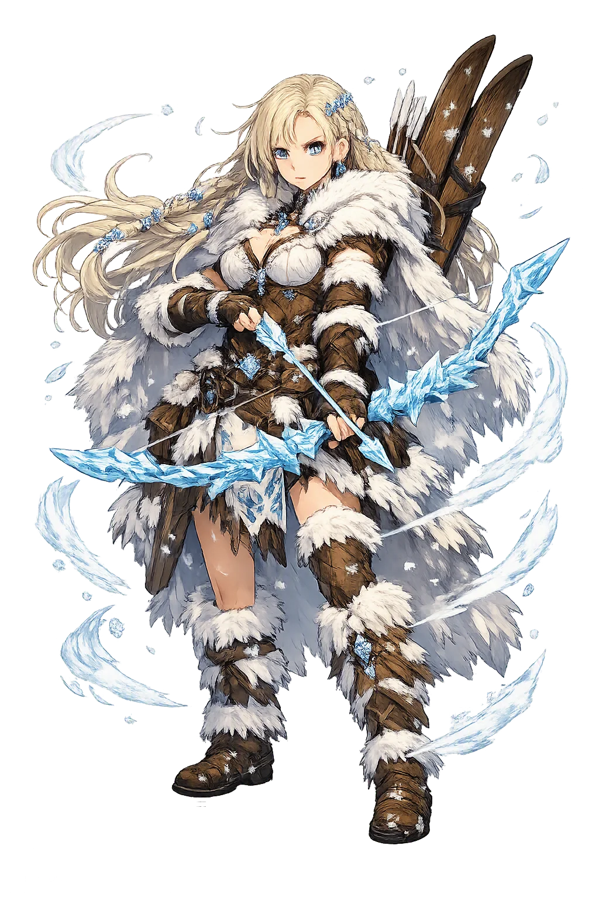
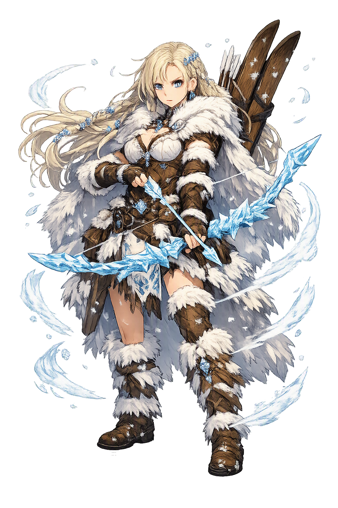

The Authentic Orthography
Winter, Mountains, Hunting · Shadow, harm (from *skadwō)

Unicode restoration and ASCII comparison
ᛋᚴᛅᚦᛁ
The name in its original Norse form. Skaði (ᛋᚴᛅᚦᛁ) is attested in the source tradition — “Shadow, harm (from *skadwō)”. Its original diacritics and script distinctions carry the full phonetic and orthographic weight of the source tradition.
skadi
Reduced to plain skadi, the name loses everything that made it specific: original diacritics and script distinctions. What remains is an ASCII string that machines can parse but that no longer speaks with its original voice.
Skaði
The Unicode restoration recovers what ASCII flattened. Skaði restores original diacritics and script distinctions, returning the name to its original written dignity. The domain encodes to Punycode, but the browser displays the truth.
Skaði.com → xn--skai-dqa.com
The non-ASCII characters in Skaði are encoded while the ASCII remains visible. To the DNS, it is Punycode. To humanity, it is Skaði.
How Skaði travels from ancient script to the modern URL
Owned, ideal, and ASCII forms of Skaði
Skaði
Restores ᛋᚴᛅᚦᛁ. The live temple domain — skaði.com.
skadi
Flattens ᛋᚴᛅᚦᛁ. The plain ASCII fallback — what DNS and legacy systems see.
How Skaði was spoken
The domain of Skaði
Skaði is the giantess who walked into Ásgarðr armed and walked out with a settlement. Daughter of the giant Þjazi of Þrymheimr, she came in helmet and byrnie to claim compensation for her father's death, and the gods met her terms: a husband chosen by his feet alone, a laugh no one thought she had in her, and her father's eyes set in the sky as stars.
Her dominion is the high country. Grímnismál remembers her dwelling in her father's ancient home, and Snorri calls her ǫndurgoð and ǫndurdís — the ski-deity who travels the drifts on her ǫndurr and shoots game with the bow. The sea she married into never held her; the mountains took her back.
Her father's storm-hall in the high peaks; when the sea failed her she went home to its wolves and wind.
Snorri names her ǫndurgoð and ǫndurdís — the ski-deity who fares over winter drifts and shoots her game.
Óðinn cast the slain giant's eyes into the sky as two stars — part of the weregild his daughter exacted.
Stories of Skaði
Skaði is the giantess of the high fells: daughter of Þjazi, inheritor of Þrymheimr, the 'bright bride of the gods' named in Grímnismál. She enters the mythic record already armed — coming to Ásgarðr not as a supplicant but as a claimant — and she leaves it as vengeance incarnate, fastening the venom-snake above the bound Loki. Between those entrances and exits lies the Edda's strangest marriage: chosen by feet, wrecked by geography. Snorri remembers her above all on skis, bow in hand, and names her ǫndurgoð and ǫndurdís, the ski-deity. Her myths ask what compensation can repair, and what terrain a self will not surrender.
The giant Þjazi had abducted Iðunn and her apples of youth; when Loki stole her back, Þjazi pursued in eagle shape, and the Æsir kindled a fire that scorched his wings and brought him down inside their garth, where they slew him. Skaði took her father's death as a cause of war: she put on helmet and byrnie and came to Ásgarðr in full war-gear, and the gods chose settlement over battle.
Her terms were three. She would choose a husband from among the Æsir — but only by the feet, the gods hidden behind a screen. They must make her laugh, which she thought no one could do; Loki tied one end of a rope to a goat's beard and the other to his own testicles, and as each hauled and shrieked he tumbled at last onto her knee, and she laughed. And Óðinn took Þjazi's eyes and hurled them into the heavens, where they shine as two stars — a father's face written into the night his daughter would hunt beneath.
Behind the screen the gods stood bare to the calves, and Skaði picked the fairest pair of feet, certain they could only belong to Baldr. They belonged to Njǫrðr of Nóatún — the sea-god, rich and even-tempered, and entirely of the wrong element. They agreed to divide their marriage by terrain: nine nights in Þrymheimr, then nine at Nóatún.
The verses Snorri preserves are the marriage's epitaph. Njǫrðr: 'Hateful to me are the mountains; I was there not long, nine nights only — the howling of wolves seemed evil to me beside the song of swans.' Skaði answered: 'I could not sleep on the sea's bed for the screaming of the bird; he wakes me who comes from the wide wave every morning — the gull.' Then she went up into the mountains and dwelt in Þrymheimr, where she travels on skis with her bow and shoots game, and is called ǫndurgoð or ǫndurdís.
At Ægir's feast, as Loki's flyting turns vicious, Skaði is among those he cannot charm. She warns him that his tongue runs free only a little longer: on a sharp rock, with the guts of his own frost-cold son, the gods will bind him. Loki answers with cruelty of his own — boasting that he was first and foremost among those who dealt Þjazi his death-blow, and claiming that Skaði once invited him to her bed.
The poem's prose epilogue gives her the last word without words. When Loki lies bound, it is Skaði who takes a venomous snake and fastens it above his face so that the poison drips downward. His wife Sigyn kneels beside him holding a basin against the drops; only when she turns to empty it does the venom strike, and Loki writhes — in Snorri's telling, the cause men call earthquakes. The giantess who once demanded a laugh becomes the keeper of the dripping drop.
Every other figure in her story negotiates; Skaði stipulates. Wronged, she does not raid and she does not weep — she arms herself, walks to the enemy's gates, and dictates compensation. The settlement is exact: a husband, a laugh, two stars. Even her mistake has integrity. Choosing a god by his feet is absurd, and she abides by the result without complaint.
Enter Extended Lore